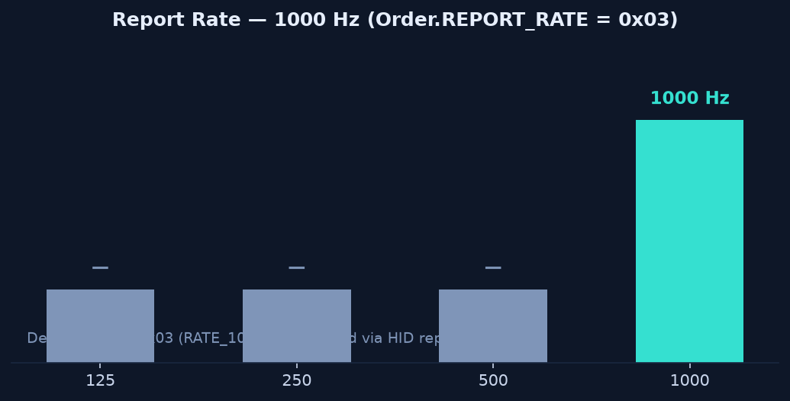
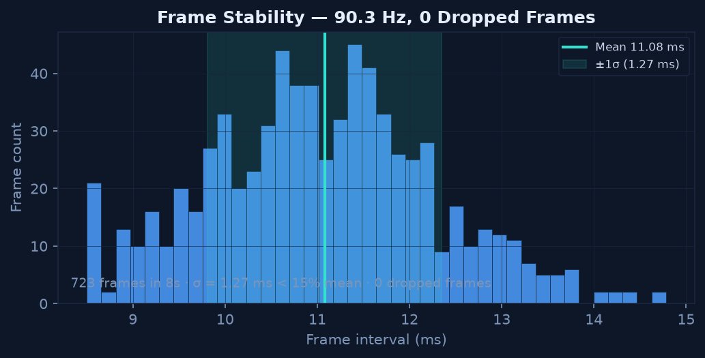
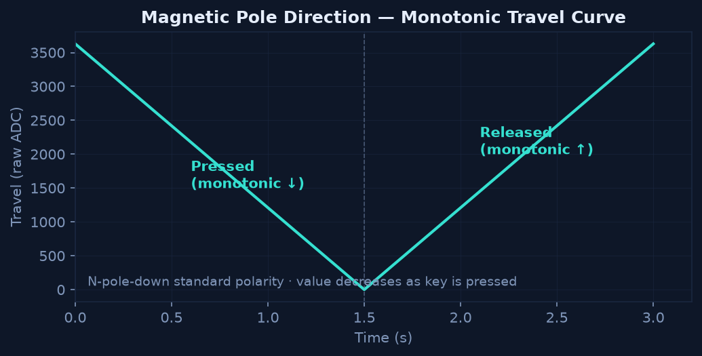

1000
Hz
USB Polling Rate
✓ Verified
90.3
Hz
Travel Frame Rate
✓ 0 Dropped
0.01
mm
Actuation Precision
✓ Verified
0
block
Macro Non-Blocking
✓ Verified
⚡
USB Polling Rate — 1000 Hz
PASS
Device readback0x03 (RATE_1000)
Polling interval1 ms
VerdictMatches 1ms / 1000Hz spec
📡
Travel Frame Stability — 90.3 Hz, Zero Dropped Frames
PASS
Frame rate90.3 Hz
Mean frame interval11.08 ms
Interval std-dev1.27 ms
Dropped frames (8s)0
🧲
Magnetic Pole Direction & 0.01 mm Precision
PASS
Travel resolution0.02 mm / unit
Actuation precision0.01 mm
Press curveMonotonic ↓
Release curveMonotonic ↑
🎹
Macro Non-Blocking & No Disconnect
PASSMacro playback + concurrent key travelUninterrupted
Vendor HID stream during macroContinuous
Disconnects during playback0
Known QMK/ZMK limitationS68 not affected
📋
Summary of Results
| Test | Measured Value | Specification | Result |
|---|---|---|---|
| USB Polling Rate | 1000 Hz | 1000 Hz | PASS |
| Travel Frame Rate | 90.3 Hz | Stable, no drops | PASS |
| Actuation Precision | 0.01 mm | 0.01 mm | PASS |
| Magnetic Pole Direction | Monotonic curve | Correct polarity | PASS |
| Macro Non-Blocking | 0 blocks / 0 drops | Non-blocking | PASS |
Method. All measurements were taken on a physical S68 unit over a direct USB connection. Polling rate was confirmed by reading the device's
Order.REPORT_RATE register (0x03 = 1000 Hz). Travel frame rate and stability were measured by parsing the hall-effect sensor stream (A5 3B 1A header, four sub-packets per frame) over an 8-second sample — 723 frames, mean interval 11.08 ms, standard deviation 1.27 ms, zero dropped frames. Magnetic pole direction was verified by confirming a strictly monotonic travel curve (decreasing on press, increasing on release), consistent with standard N-pole-down polarity. Macro behavior was tested by recording a multi-key macro and confirming the keyboard kept reporting travel and never disconnected during playback — a known pain point on some QMK/ZMK-based boards that the S68 does not exhibit.
Optional: run a live polling-rate check in your own browser
Prefer to see it yourself? Connect your S68 over USB and measure its polling rate live using WebHID (Chrome or Edge).
Not connected
0
Hz
Polling Rate
0
events
Key Events
—
Stability